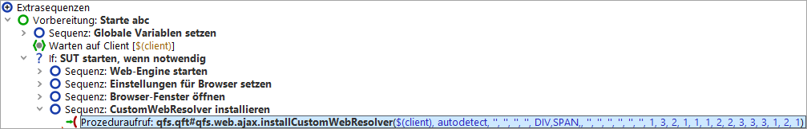

| Version 6.0.3 |
installCustomWebResolver
Die Zuordnung der funktionalen Komponenten zu HTML Objekten erfolgt im
Normalfall über die Prozedur
qfs.web.ajax.installCustomWebResolver
aus der Standardbibliothek qfs.qft. Wenn Sie zur Erstellung der
Verbindungssequenz den Schnellstart-Assistenten verwendet haben, was wir
sehr empfehlen, finden Sie einen Aufruf dieser Prozedur im letzten Knoten
der Startsequenz. Diesen Aufruf sollten Sie bei Bedarf für Ihre Anwendung konfigurieren.
|
|  | ||
|
| Abbildung 47.4: Aufruf des CustomWebResolvers im 'Vorbereitung' Knoten des Schnellstart-Assistenten | ||
Allgemeine Informationen zur Web-Komponentenerkennung finden Sie in Erkennung von Web-Komponenten und Toolkits sowie in Generelle Konfigurationsmöglichkeiten.
Die Erläuterung der Parameter finden Sie
in installCustomWebResolver - Parameter, die der Parametersyntax
in installCustomWebResolver - Parametersyntax.
Beispiele für die Verwendung der Prozedur Sie daran anschließend.
Die generischen QF-Test Klassen sind in Kapitel 57
erläutert. Bitte beachten Sie, dass
diese Klassen auch eine Typerweiterung enthalten können. Diese ist beim
Mappen bestimmter GUI-Elemente wie z.B. Item relevant:
Item:ListItem bezeichnet Listenelemente, Button:ComboBoxButton
einen Button innerhalb einer Combobox.
Typerweiterungen sind auch deshalb interessant, weil sie beim Mapping frei vergeben werden können.
Das Beispiel in installCustomWebResolver - Tabelle und TreeTable verwendet diese Technik.
installCustomWebResolver - Parameter
Die Parameter sind entsprechend ihrer Relevanz geordnet. Da die
Komponentenerkennung sehr oft auf der Zuordnung von CSS Klassen oder anderen
Attributwerten zu generischen Klassen von QF-Test basiert, sind somit die
Parameter genericClasses
und attributesToGenericClasses an erster Stelle zu finden.
|
|
|
||||||||||||||||||||||||||||||||||||||||||||||||||||||||||
installCustomWebResolver - Parametersyntax
Wenn für einen Parameter mehrere Einträge möglich sind, so müssen die einzelnen Zuweisungen oder Ausdrücke in den Parameterlisten durch Kommas voneinander getrennt werden. Nach dem Komma kann ein Zeilenumbruch eingefügt werden, aber kein Leerzeichen!
Die Parametersyntax umfasst folgende Ausdrücke, nach Relevanz geordnet:
% gibt an, das die folgene Zeichenkette als regulärer Ausdruck
interpretiert werden soll.
%list.* bezeichnet alle Werte, die mit list beginnen.
Nutzbar für alle Parameter.
css-class=generic class
Ordnet einem GUI-Element mit der angegebenen CSS Klasse eine QF-Test Komponente der angegebenen generischen Klasse zu.
css-button=Button
ordnet dem GUI-Element mit der CSS Klasse css-button eine QF-Test
Komponente mit der generischen Klasse Button zu.
Nutzbar im Parameter genericClasses
attribute=value=generic class
Ordnet einem GUI-Element mit dem angegebenen Attributwert eine QF-Test Komponente der angegebenen generischen Klasse zu.
role=toggle=RadioButton weist Elementen mit role
Attributen, die den Wert toggle haben, QF-Test Komponenten
der Klasse RadioButton zu.
Nutzbar im Parameter attributesToGenericClasses.
TAG=generic class
Ordnet einem GUI-Element mit dem angebenen Tag eine QF-Test Komponente der angegebenen generischen Klasse zu. Tags müssen in Großbuchstaben angegeben werden.
LI=ListItem ordnet einem GUI-Element mit dem Tag li
eine QF-Test Komponente mit der generischen Klasse ListItem zu.
Nutzbar im Parameter tagsToGenericClasses.
classname oder TAG
Kann an einen Eintrag der Parameterliste angehängt werden. Der Eintrag wird nur dann ausgewertet, wenn eines der übergeordneten Objekte des GUI-Elements den angegebenen generischen Klassenamen oder das angegebene Tag (in Großbuchstaben) hat.
Nutzbar in allen Parametern.
Beispiel für den Parameter tagsToGenericClasses:
LI=TableCell@::ancestor=TableRow
ordnet einem GUI-Element mit dem Tag li eine QF-Test Komponente der generischen
Klasse TableCell zu, wenn ein übergeordnetes Element die Klasse TableRow hat.
TAG
Die vorangehende Zuweisung wird nur ausgewertet, wenn das GUI-Element
das angegebene Tag hat.
Muss bei Bedarf vor @:: stehen.
Tags müssen in Großbuchstaben angegeben werden.
Nutzbar in allen Parametern.
Beispiel für den Parameter genericClasses:
row=TableRow=SPAN
ordnet einem GUI-Element der CSS-Klasse row eine QF-Test Komponente
mit der generischen Klasse TableRow zu, wenn das Tag den Wert
SPAN hat.
Beispiel für den Parameter genericClasses:
row=TableRow=SPAN@::ancestor=Table
ordnet einem GUI-Element der CSS-Klasse row eine QF-Test Komponente
mit der generischen Klasse TableRow zu, wenn das Tag den Wert
SPAN hat und wenn eines der übergeordneten Elemente die Klasse.
Table hat.
Beispiel für den Parameter interestingByAttributes:
myid=%.*=CONTAINER
nimmt GUI-Elemente mit dem Tag container auf, aber nur, wenn
das Attribut den Wert myid hat.
classname oder TAGKann an einen Eintrag der Parameterliste angehängt werden. Der Eintrag wird nur dann ausgewertet, wenn eines der übergeordneten Objekte des GUI-Elements den angegebenen generischen Klassenamen oder das angegebene Tag (in Großbuchstaben) hat.
Nutzbar in allen Parametern.
Beispiel für den Parameter genericClasses:
css-data-row=TableRow@::parent=Table
ordnet dem GUI-Element mit der CSS Klasse
css-data-row eine QF-Test Komponente der generischen Klasse
TableRow zu, wenn das direkt übergeordnete GUI-Element die Klasse
Table hat.
level>=classname oder TAG
Kann an einen Eintrag der Parameterliste angehängt werden. Der Eintrag wird nur dann ausgewertet, wenn eines der übergeordneten Objekte des GUI-Elements den angegebenen generischen Klassenamen oder das angegebene Tag (in Großbuchstaben) hat.
Die Ebene bezieht sich auf die von QF-Test aufgenommene Komponentenstruktur
bzw. den generierten DomNode. Dies bedeutet, dass die Komponentenerkennung
fehlschlagen kann, wenn sich die Webseite ändert oder Sie Resolver-Einträge ändern.
Es könnte besser sein, statt dessen @::ancestor zu verwenden.
Alternativ können Sie das entscheidende übergeordnete GUI-Element einer eigenen
Klasse (oder Klassentyp) zuweisen und diese dann in @::parent oder
@::ancestor einsetzen. Das Beispiel in
installCustomWebResolver - Baum und TreeTable verdeutlicht diese Technik.
Nutzbar in allen Parametern.
Beispiel für den Parameter genericClasses:
css-button=Button:ComboBoxButton@::parent<3>=ComboBox
Nimmt einen Button mit dem Typ ComboBoxButton auf,
wenn der übergeordnete Knoten in Ebene drei die Klasse ComboBox hat.
level>=classname oder TAG
Kann an einen Eintrag der Parameterliste angehängt werden. Der Eintrag wird nur dann ausgewertet, wenn eines der übergeordneten Objekte des GUI-Elements den angegebenen generischen Klassenamen oder das angegebene Tag (in Großbuchstaben) hat. (Ebenenzählung wie bei @::parent.)
Nutzbar in allen Parametern.
Beispiel für den Parameter genericClasses:
cbx=CheckBox:ListItemCheckBox@::ancestor<3>=List
Nimmt eine CheckBox mit dem Typ ListItemCheckBox auf,
wenn einer der Knoten in den drei übergeordneten Ebenen die Klasse List hat.
attribute=value
Nutzbar in den Parametern ignoreByAttributes und
interestingByAttributes.
Im Parameter ignoreByAttributes bewirkt die Zuweisung, dass GUI-Elemente
mit dem angegebenen Attributwert in der Baumhierarchie nicht angelegt werden.
Im Parameter interestingByAttributes bewirkt die Zuweisung, dass
im Komponentenbaum Knoten für Elemente angelegt werden, die den angegebenen Attributwert
aufweisen.
Beispiel für den Parameter ignoreByAttributes:
type=container bewirkt, dass im Komponentenbaum keine Knoten
für Elemente angelegt werden, bei denen das Attribut type
den Wert container hat.
Beispiel für den Parameter interestingByAttributes:
type=splitpane bewirkt, dass im Komponentenbaum Knoten
für Elemente angelegt werden, bei denen das Attribut type
den Wert splitpane hat.
Für Interessierte:
@::ancestor=class nutzt intern die Objekt-Methode obj.getAncestorOfClass(class).
@::ancestor<level>=class nutzt intern die
Objekt-Methode obj.getAncestorOfClass(class, level)
@::parent= nutzt intern die Objekt-Methode obj.getParent()
@::parent<level>= nutzt intern die Objekt-Methode
obj.getNthParent(level)
Details zu den Methoden finden Sie in Pseudo DOM API für Webanwendungen.
| Letzte Änderung: 6.9.2022 Copyright © 1999-2022 Quality First Software GmbH |